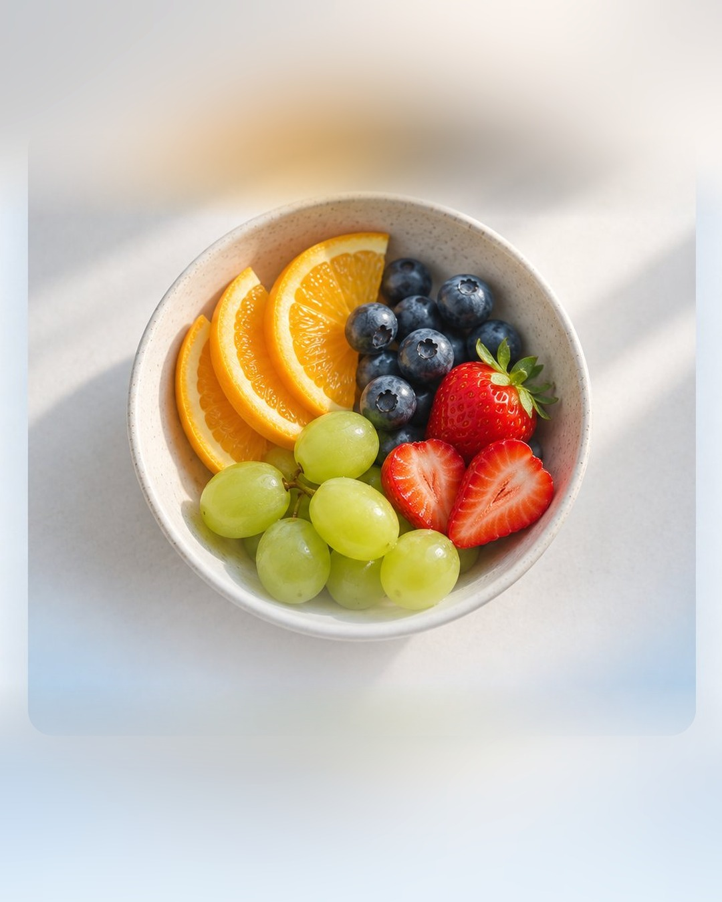

卡面（更小 · 图大 · 字小）
我收藏的建议
共 3 条 ›

今天脾气有点炸，先松开它
确认有帮助 3 次 · 压力偏高
最近一次：今天 21:14
收藏区整体下移；卡片更小更矮、图更大（56）、字更小；点「共 N 条 ›」进入完整页面。


改动文件：src/components/SavedAdviceDeck.tsx。
· 收藏区 marginTop 由 8pt 提到 24pt（整体下移）；
· 卡片高度 120 → 104，单卡更窄（PEEK 40 → 48），左图 48 → 56，标题 16 → 15、描述 15 → 13.5、时间 13 → 11；
· 「共 N 条 ›」点击改为打开全屏页面（占满整屏、可滚动、带返回），不再弹底部 sheet；卡片本身点按仍弹底部 sheet 看全部。